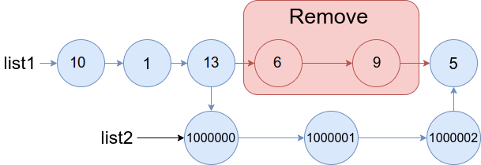

1669. 合并两个链表
双指针定位：prev 走到下标 a−1、after 走到下标 b+1，把 list2 整条接在 prev 和 after 之间。
思路
prev从头走a-1步到下标a-1（删除区间[a,b]的左邻）；after从prev继续走到下标b+1（右邻）。- 找
list2的尾结点tail。 - 两针一接：
prev.next = list2（头挂上），tail.next = after（尾巴接回），原[a,b]段自动脱落。 - 题目保证
1 ≤ a ≤ b < 长度-1，所以prev、after不会越界，直接返回list1。
图解
最优解
1class Solution {2 public ListNode mergeInBetween(ListNode list1, int a, int b, ListNode list2) {3 // prev：下标 a-1 的结点（删除区间 [a,b] 的左邻）4 ListNode prev = list1;5 for (int i = 1; i < a; i++) prev = prev.next;6 // after：下标 b+1 的结点（删除区间的右邻），从 prev 继续走7 ListNode after = prev;8 for (int i = a; i <= b + 1; i++) after = after.next;9 // 先找 list2 尾结点，再把整条挂进去：头接 prev 后，尾接 after 前10 ListNode tail = list2;11 while (tail.next != null) tail = tail.next;12 prev.next = list2;13 tail.next = after;14 return list1;15 }16}题目
给你两个链表 list1 和 list2 ，它们包含的元素分别为 n 个和 m 个。
请你将 list1 中下标从 a 到 b 的全部节点都删除，并将list2 接在被删除节点的位置。
下图中蓝色边和节点展示了操作后的结果：

请你返回结果链表的头指针。
示例 1：

输入：list1 = [10,1,13,6,9,5], a = 3, b = 4, list2 = [1000000,1000001,1000002] 输出：[10,1,13,1000000,1000001,1000002,5] 解释：我们删除 list1 中下标为 3 和 4 的两个节点，并将 list2 接在该位置。上图中蓝色的边和节点为答案链表。
示例 2：

输入：list1 = [0,1,2,3,4,5,6], a = 2, b = 5, list2 = [1000000,1000001,1000002,1000003,1000004] 输出：[0,1,1000000,1000001,1000002,1000003,1000004,6] 解释：上图中蓝色的边和节点为答案链表。
提示：
3 <= list1.length <= 1041 <= a <= b < list1.length - 11 <= list2.length <= 104
题面取自力扣当前版本。
数据快照 2026-11-04。题面版权归力扣所有，本站点仅供本人学习使用，请勿对外发布。